W13 · B13 native gallery
Native PNG/AX pairs are classified by completed selector receipts. Historical captures and failure diagnostics are separate. See manifest for source revisions and limits.
Pending or limited- phone W13 normal blank template form and disabled Save: named PNG/AX pair absent
- phone W13 normal strength exercise name: named PNG/AX pair absent
- phone W13 normal strength defaults 3 sets and 10 reps: named PNG/AX pair absent
- phone W13 normal session exercise Duration and Distance summary: named PNG/AX pair absent
- phone W13 normal filled name and enabled Save before Cancel: named PNG/AX pair absent
- phone W13 MAX blank template form and disabled Save: named PNG/AX pair absent
- phone W13 MAX strength exercise name: named PNG/AX pair absent
- phone W13 MAX strength defaults 3 sets and 10 reps: named PNG/AX pair absent
- phone W13 MAX session exercise Duration and Distance summary: named PNG/AX pair absent
- phone W13 MAX filled name and enabled Save before Cancel: named PNG/AX pair absent
- phone-retry1 W13 normal strength exercise name: named PNG/AX pair absent
- phone-retry1 W13 normal strength defaults 3 sets and 10 reps: named PNG/AX pair absent
- phone-retry1 W13 normal session exercise Duration and Distance summary: named PNG/AX pair absent
- phone-retry1 W13 normal filled name and enabled Save before Cancel: named PNG/AX pair absent
- phone-retry1 W13 MAX strength exercise name: named PNG/AX pair absent
- phone-retry1 W13 MAX strength defaults 3 sets and 10 reps: named PNG/AX pair absent
- phone-retry1 W13 MAX session exercise Duration and Distance summary: named PNG/AX pair absent
- phone-retry1 W13 MAX filled name and enabled Save before Cancel: named PNG/AX pair absent
- ipad W13 normal strength exercise name: named PNG/AX pair absent
- ipad W13 normal strength defaults 3 sets and 10 reps: named PNG/AX pair absent
- ipad W13 normal session exercise Duration and Distance summary: named PNG/AX pair absent
- ipad W13 normal filled name and enabled Save before Cancel: named PNG/AX pair absent
- ipad W13 MAX strength exercise name: named PNG/AX pair absent
- ipad W13 MAX strength defaults 3 sets and 10 reps: named PNG/AX pair absent
- ipad W13 MAX session exercise Duration and Distance summary: named PNG/AX pair absent
- ipad W13 MAX filled name and enabled Save before Cancel: named PNG/AX pair absent
- Duo closed/open current-source capture pending; historical baselines only
- Before-teardown failure attachments never count as passed W12/W13/W14/W15 evidence
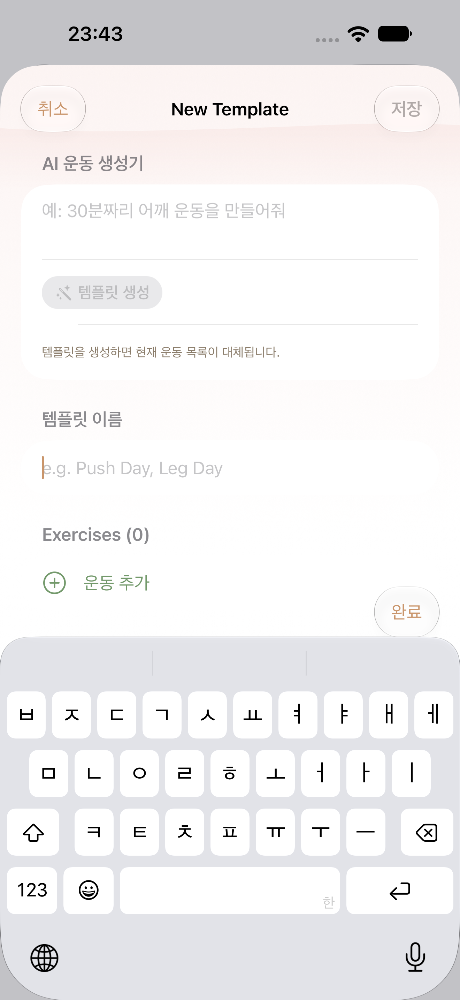
regular · historical
W13 historical baseline
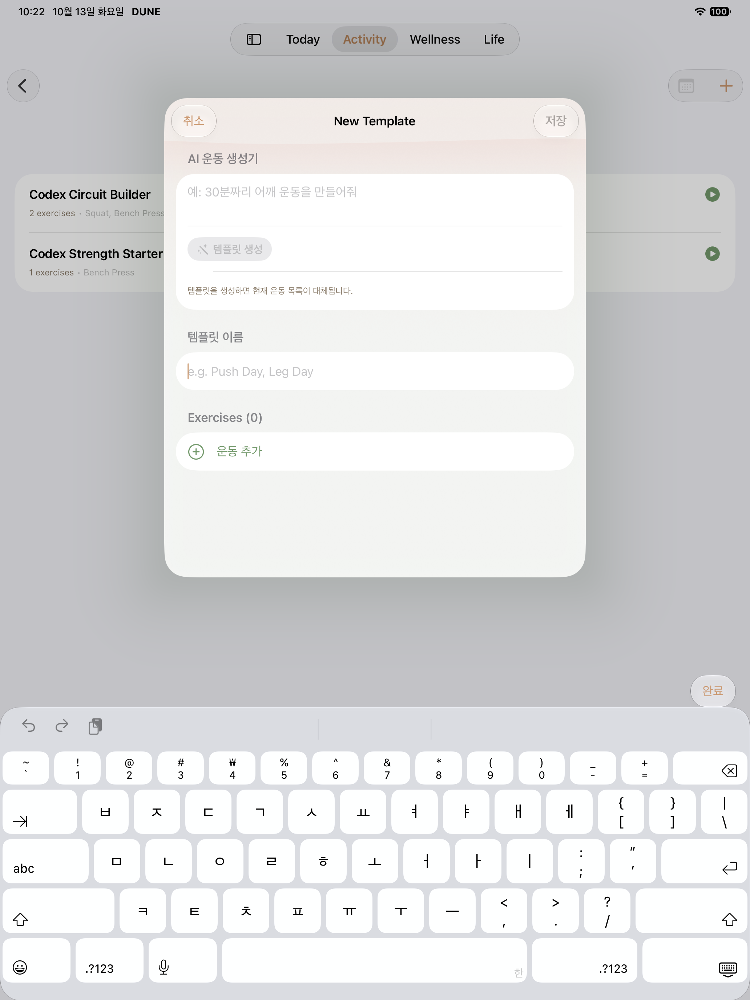
ipad · historical
W13 historical baseline
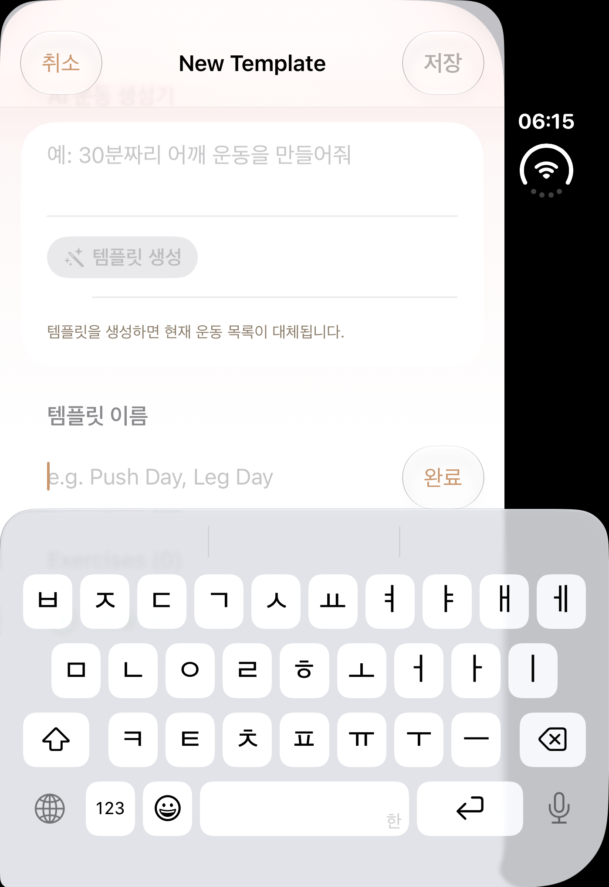
duo · historical
W13 historical baseline
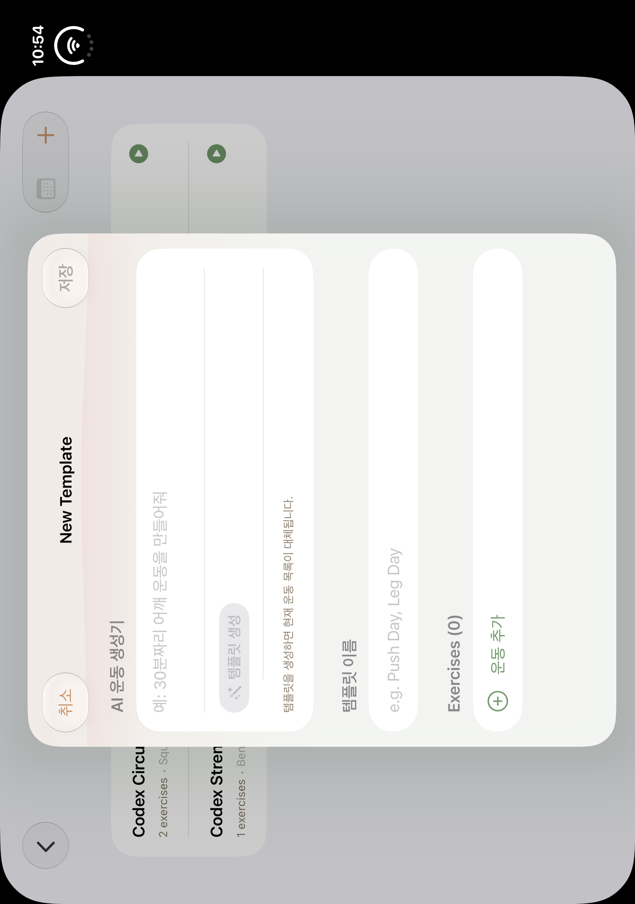
duo-open · historical
W13 historical baseline
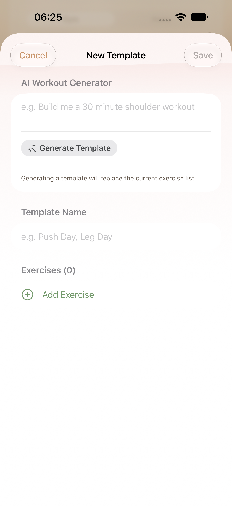
regular · diagnostic
Normal blank template form and disabled Save
AX tree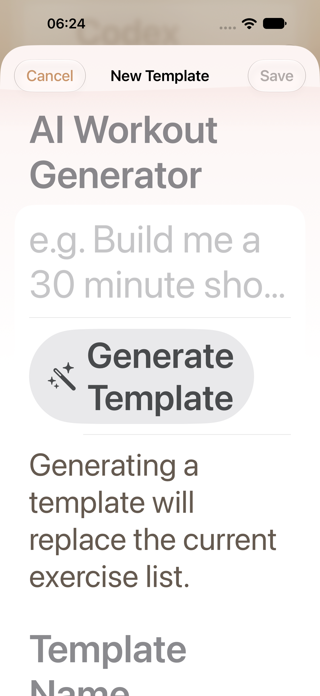
regular · diagnostic
MAX blank template form and disabled Save
AX tree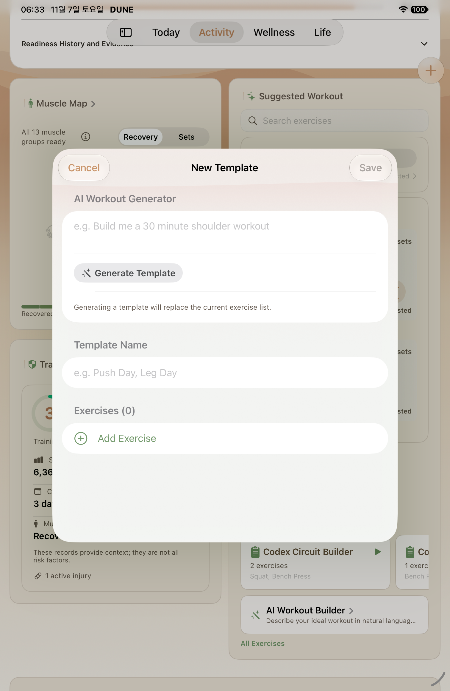
ipad · diagnostic
Normal blank template form and disabled Save
AX tree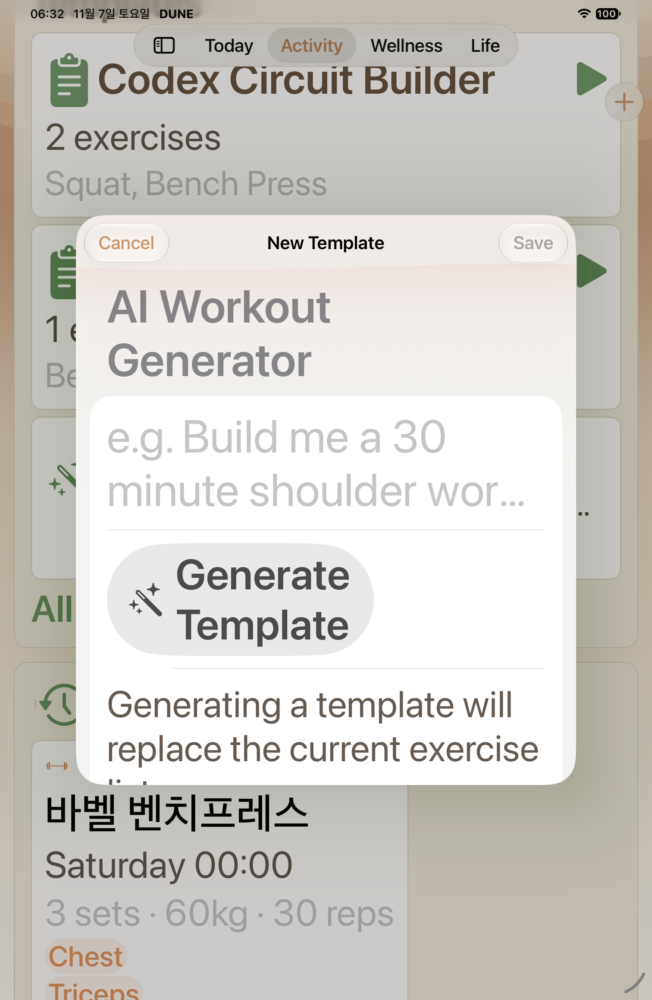
ipad · diagnostic
MAX blank template form and disabled Save
AX treeipad · after
Normal blank template form and disabled Save
AX tree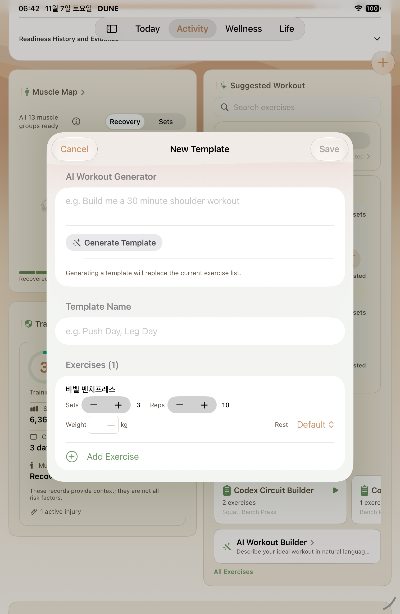
ipad · after
Normal strength exercise name
AX tree ipad · after
ipad · after
Normal strength defaults 3 sets and 10 reps
AX tree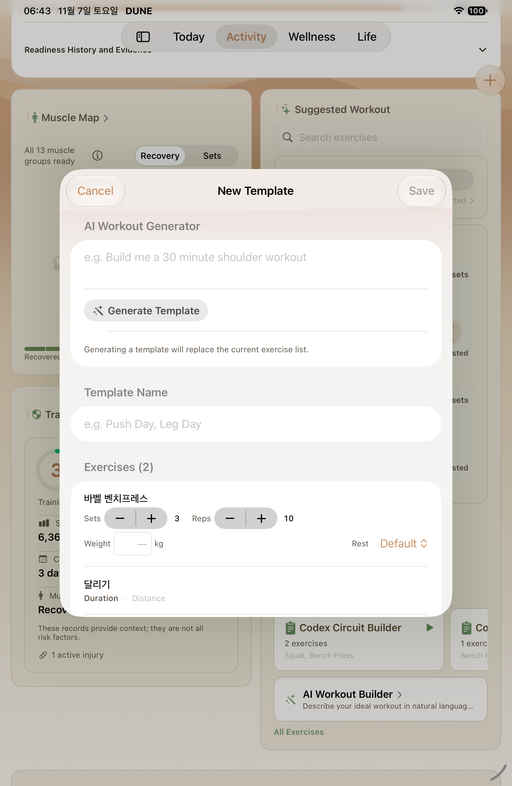
ipad · after
Normal session exercise Duration and Distance summary
AX tree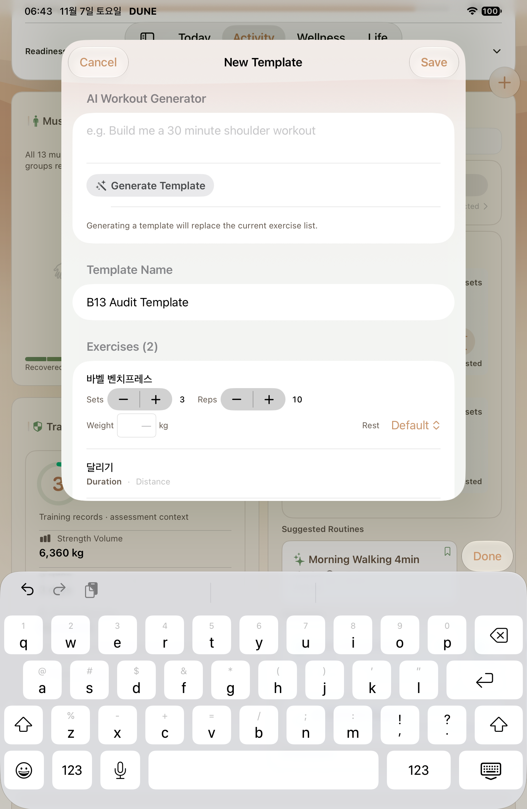
ipad · after
Normal filled name and enabled Save before Cancel
AX tree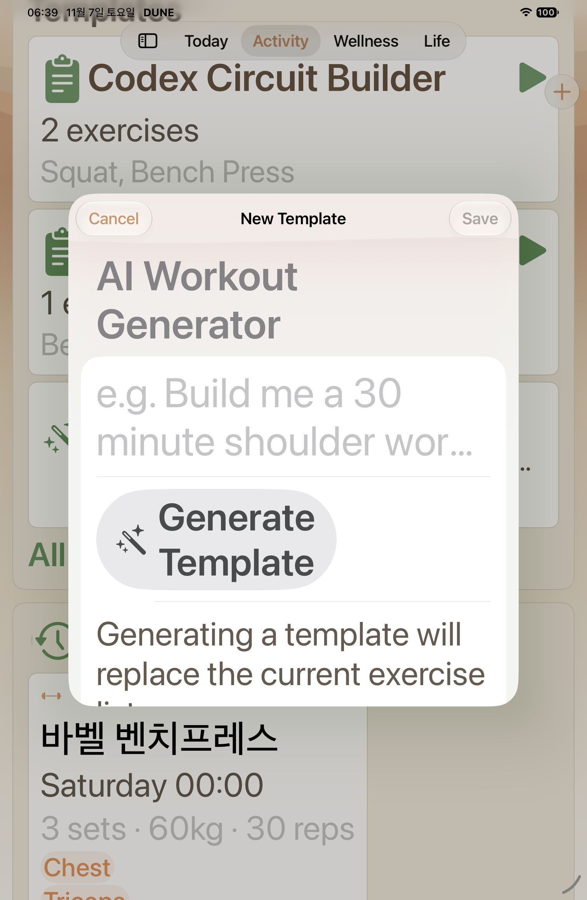
ipad · after
MAX blank template form and disabled Save
AX tree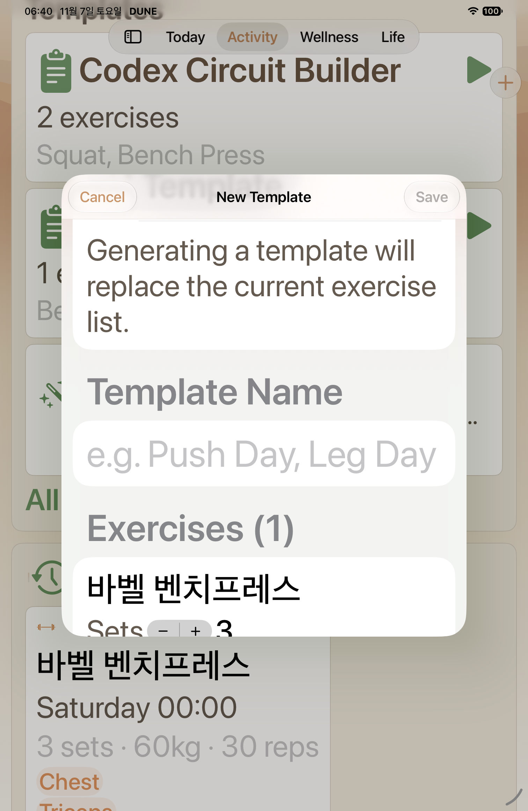
ipad · after
MAX strength exercise name
AX tree ipad · after
ipad · after
MAX strength defaults 3 sets and 10 reps
AX tree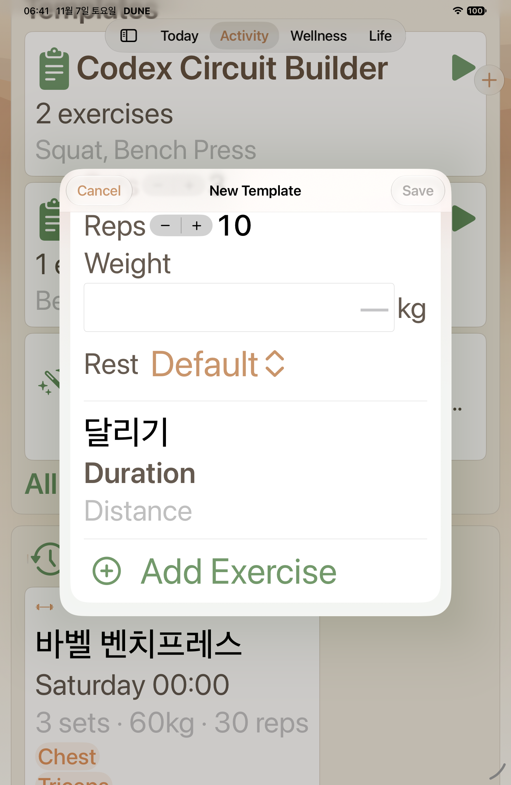
ipad · after
MAX session exercise Duration and Distance summary
AX tree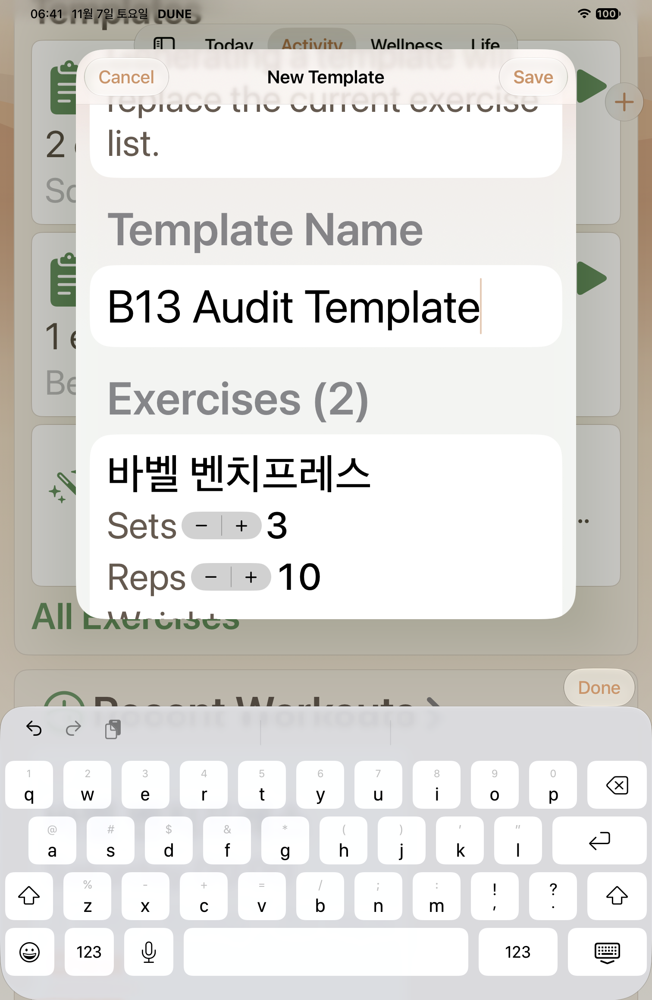
ipad · after
MAX filled name and enabled Save before Cancel
AX tree